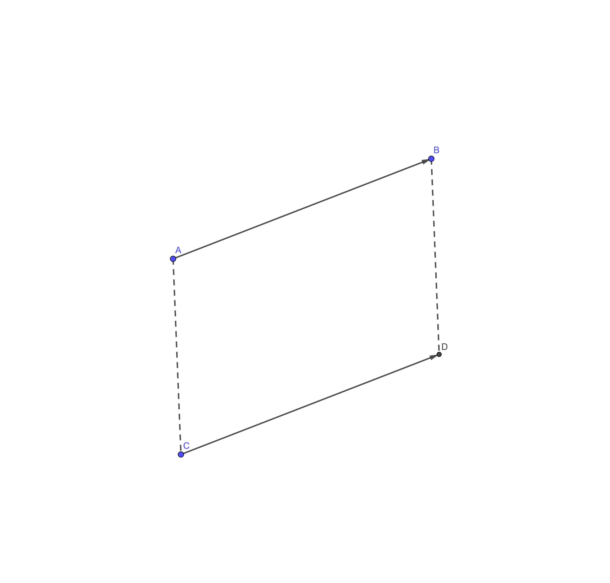
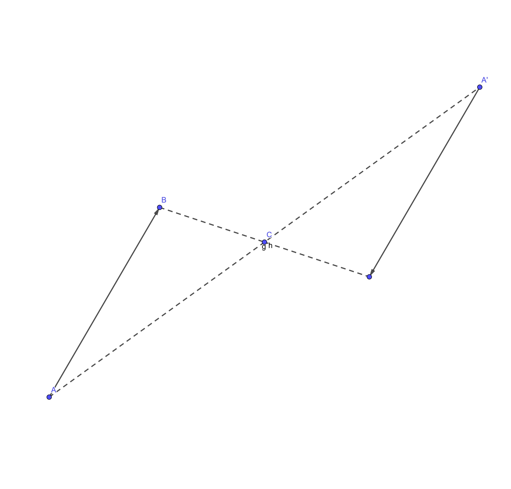
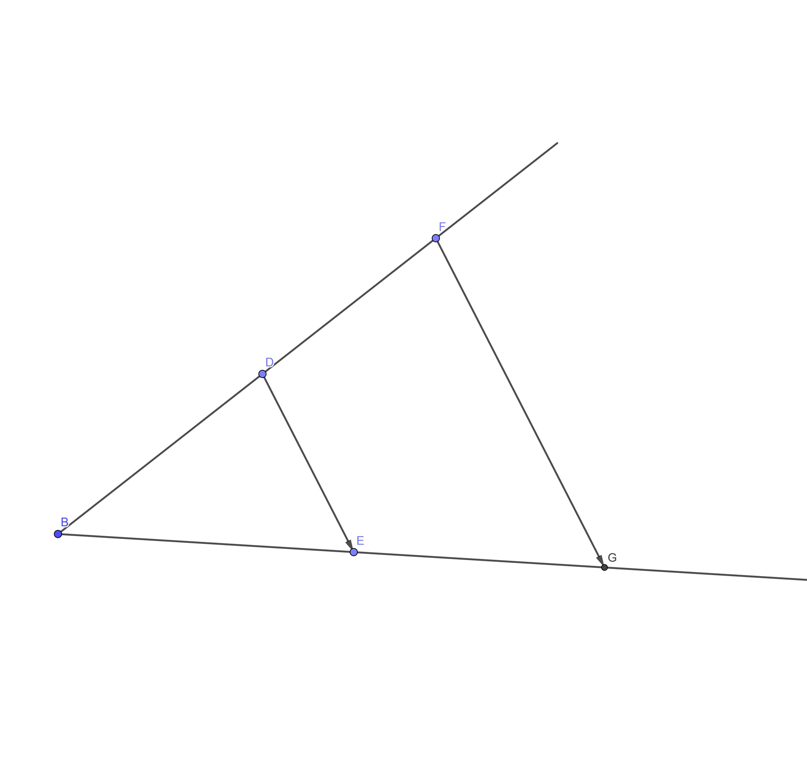
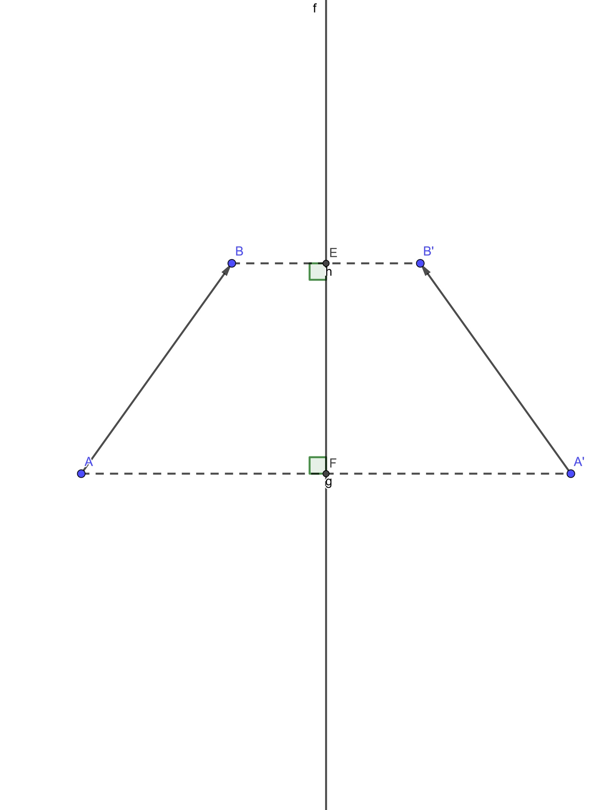
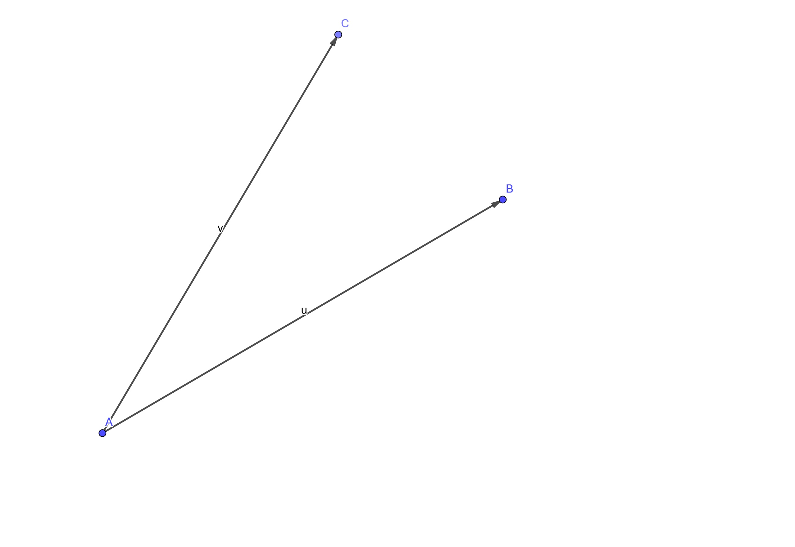

Главная страница Видео Теория
Движения и преобразования плоскости в вычислительной геометрии
Из движений и преобразований плоскости выделяют параллельный перенос, симметрию относительно точки, симметрию относительно прямой, гомотетию и поворот. Рассмотрим каждое из них подробнее.
Параллельный перенос
Параллельным переносом на вектор (dx; dy) называют преобразование плоскости, при котором каждой точке плоскости (x; y) сопоставляется точка (x + dx; y + dy). В вычислительной геометрии параллельный перенос может быть использован, например, для перемещения множества точек M в множество точек M’, одна из точек которого является началом координат (например, данная операция используется перед сортировкой точек по полярному углу). Операция, обратная параллельному переносу на вектор (dx; dy) – параллельный перенос на вектор (-dx; -dy). Одно из важных свойств параллельного переноса – любая фигура F при параллельном переносе переходит в фигуру F’ равную F.
Ниже приведён псевдокод (смотрите примечание) параллельного переноса:
Point Parallel (Vector V, Point X)
Point Y(X.x + V.dx, X.y + V.dy); return Y
Симметрия относительно точки
Симметрией относительно точки (x0; y0) называют преобразование плоскости, при котором каждой точке плоскости (x; y) сопоставляется точка, находящаяся на таком же расстоянии от данной точки и лежащая с точками (x; y), (x0; y0) на одной прямой. Вычислим её координаты следующим образом: при симметрии относительно центра координат точке (x; y) будет сопоставлена точка (-x; -y); если же центр симметрии будет расположен в точке (x0; y0), то точка (x; y) будет удалена от него на вектор (x - x0; y - y0), симметричная же ей точка должна быть удалена от (x0; y0) на вектор (x0 - x; y0 - y) и, следовательно, иметь координаты (2 * x0 - x; 2 * y0 - y). Симметрия относительно точки является операцией, обратной самой себе. Следует отметить, что центр симметрии при симметрии переходит сам в себя. При применении симметрии относительно точки к фигуре F, фигура F переходит в фигуру равную данной, но направленную в противоположную сторону.
Ниже приведён псевдокод симметрии относительно точки:
Point PSymmetry (Point O, Point X)
Point Y(2 * O.x - X.x; 2 * O.y - X.y); return Y;
Также симметрия относительно точки является частным случаем гомотетии, а именно гомотетией относительно центра симметрии с коэффициентом -1. Подробнее об этом далее
Гомотетия
Гомотетией относительно точки (x0, y0) с коэффициентом k называется преобразование плоскости, при котором точке, удалённой на вектор (dx, dy) от центра гомотетии сопоставляется точка, удалённая от центра гомотетии на вектор (k * dx, k * dy). Можно вывести и её координаты аналогично с выводом координат точки, симметричной относительно данной. Если сделать всё правильно, то мы получим, что её координаты – (k * (x - x0) + x0; k * (y - y0) + y0), где (x; y) – координаты точки до применения данной гомотетии. Таким образом мы можем реализовать гомотетию двумя способами.
Ниже приведён псевдокод гомотетии вектора согласно определению:
Vector Homotetion(Vector V, double k)
Vector V2(V.dx * k; V.dy * k); return V2;
Следующий псевдокод выполняет гомотетию точки X относительно точки O с коэффициентом k с использованием вышеописанной функции:
Vector V(O, X);
X = O + Homotetion(V, k);
Также можно использовать уравнение, описанное выше, для получения координат новой точки.
При гомотетии с коэффициентом, большим 1 фигура переходит в фигуру, подобную данной и большую, чем изначальная фигура; с коэффициентом, меньшим 1, но большим 0 фигура переходит в фигуру, подобную данной и меньшую, чем изначальная фигура; при гомотетии с коэффициентом, равным 1, фигура остаётся неизменной. Коэффициент может быть и отрицательным. Преобразованием, обратным гомотетии с коэффициентом k относительно точки (x; y) является гомотетия с коэффициентом 1𝑘 относительно этой же точки.
Симметрия относительно прямой
Симметрией относительно прямой L, называется преобразование плоскости, при котором каждой точке плоскости сопоставляется точка, удалённая от прямой на такое же расстояние, как и данная точка, но находящаяся в другой полуплоскости и образующая с данной точкой прямую, перпендикулярную оси симметрии. Осью симметрии и называется прямая L. Точке, лежащей на оси симметрии сопоставляется она же.
Ниже приведён псевдокод симметрии точки относительно данной прямой:
Point LSimmetry(Line L, Point X)
Point H = Intersection(Perpendiculare(L, X), L); return Homotetion2(X, H, -1);
где Intersection возвращает точку пересечения прямых, Perpendiculare возвращает прямую, перпендикулярную данной и проходящую через данную точку, Homotetion2 выполняет гомотетию согласно определению.
Данная операция является обратной самой себе.
